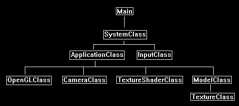

Sometimes graphics engines have a requirement to render numerous copies of the exact same geometry with just slight changes in position, scaling, color, and so forth.
Particle, foliage, and tree engines are good examples of these types of systems that use the same model hundreds or thousands of times with just slight changes for each
time it renders a copy.
These systems tend to be very inefficient and send a large amount of data to the graphics card.
Instancing is a method of rendering in OpenGL 4.0 that eliminates this problem by accepting a single vertex buffer with the geometry and then uses a second buffer called
an Instance Buffer which carries the modification information for each instance of the model geometry.
The vertex buffer stays cached on the video card and then it is modified and rendered for each instance in the instance buffer.

For this tutorial I will be modifying the original texturing tutorial and use instancing to render four copies of the triangle with slightly different positions to show how
instancing works on a basic level.
The ModelClass and the texture GLSL program will need slight modifications for instancing to work.
I usually start with the GLSL portion of the code, but for instancing it makes more sense if we start by looking at how to modify the ModelClass first.
Framework
We will use the same framework from the texturing tutorial.

Modelclass.h
////////////////////////////////////////////////////////////////////////////////
// Filename: modelclass.h
////////////////////////////////////////////////////////////////////////////////
#ifndef _MODELCLASS_H_
#define _MODELCLASS_H_
//////////////
// INCLUDES //
//////////////
#include <fstream>
using namespace std;
///////////////////////
// MY CLASS INCLUDES //
///////////////////////
#include "textureclass.h"
////////////////////////////////////////////////////////////////////////////////
// Class Name: ModelClass
////////////////////////////////////////////////////////////////////////////////
class ModelClass
{
private:
struct VertexType
{
float x, y, z;
float tu, tv;
};
We add a new structure that will hold the instance information.
In this tutorial we are modifying the position of each instance of the triangle so we use a position vector.
But note that it could be anything else you want to modify for each instance such as color, size, rotation, and so forth.
You can modify multiple things at once for each instance also.
struct InstanceType
{
float x, y, z;
};
public:
ModelClass();
ModelClass(const ModelClass&);
~ModelClass();
bool Initialize(OpenGLClass*, char*, bool);
void Shutdown();
void Render();
void SetTexture1(unsigned int);
private:
bool InitializeBuffers();
void ShutdownBuffers();
void RenderBuffers();
bool LoadTexture(char*, bool);
void ReleaseTexture();
private:
OpenGLClass* m_OpenGLPtr;
The index count has been replaced with the instance count.
int m_vertexCount, m_instanceCount;
The ModelClass now has an instance buffer ID of an index buffer ID.
unsigned int m_vertexArrayId, m_vertexBufferId, m_instanceBufferId;
TextureClass* m_Texture;
bool m_texture1Loaded;
};
#endif
Modelclass.cpp
////////////////////////////////////////////////////////////////////////////////
// Filename: modelclass.cpp
////////////////////////////////////////////////////////////////////////////////
#include "modelclass.h"
ModelClass::ModelClass()
{
m_OpenGLPtr = 0;
m_Texture = 0;
m_texture1Loaded = false;
}
ModelClass::ModelClass(const ModelClass& other)
{
}
ModelClass::~ModelClass()
{
}
bool ModelClass::Initialize(OpenGLClass* OpenGL, char* textureFilename1, bool wrap1)
{
bool result;
// Store a pointer to the OpenGL object.
m_OpenGLPtr = OpenGL;
// Initialize the vertex and instance buffers.
result = InitializeBuffers();
if(!result)
{
return false;
}
// Load the texture for this model.
result = LoadTexture(textureFilename1, wrap1);
if(!result)
{
return false;
}
return true;
}
void ModelClass::Shutdown()
{
// Release the texture used for this model.
ReleaseTexture();
// Release the vertex and instance buffers.
ShutdownBuffers();
// Release the pointer to the OpenGL object.
m_OpenGLPtr = 0;
return;
}
void ModelClass::Render()
{
// Put the vertex and instance buffers on the graphics pipeline to prepare them for drawing.
RenderBuffers();
return;
}
bool ModelClass::InitializeBuffers()
{
VertexType* vertices;
InstanceType* instances;
We will start by manually setting up the vertex buffer that holds the triangle as usual, however there will be no index buffer setup with it this time.
// Set the number of vertices in the vertex array.
m_vertexCount = 3;
// Create the vertex array.
vertices = new VertexType[m_vertexCount];
// Bottom left.
vertices[0].x = -1.0f; // Position.
vertices[0].y = -1.0f;
vertices[0].z = 0.0f;
vertices[0].tu = 0.0f; // Texture
vertices[0].tv = 0.0f;
// Top middle.
vertices[1].x = 0.0f; // Position.
vertices[1].y = 1.0f;
vertices[1].z = 0.0f;
vertices[1].tu = 0.5f; // Texture
vertices[1].tv = 1.0f;
// Bottom right.
vertices[2].x = 1.0f; // Position.
vertices[2].y = -1.0f;
vertices[2].z = 0.0f;
vertices[2].tu = 1.0f; // Texture
vertices[2].tv = 0.0f;
We will now setup the new instance buffer.
We start by first setting the number of instances of the triangle that will need to be rendered.
For this tutorial I have manually set it to 4 so that we will have four triangles rendered on the screen.
// Set the number of instances in the array.
m_instanceCount = 4;
Next, we create a temporary instance array using the instance count.
Note we use the InstanceType structure for the array type which is defined in the ModelClass header file.
// Create the instance array.
instances = new InstanceType[m_instanceCount];
Now here is where we setup the different positions for each instance of the triangle.
I have set four different x, y, z positions for each triangle.
Note that this is where you could set color, scaling, different texture coordinates, and so forth.
An instance can be modified in any way you want it to be.
For this tutorial I used position as it is easy to see visually which helps understand how instancing works.
// Load the instance array with data.
instances[0].x = -1.5f;
instances[0].y = -1.5f;
instances[0].z = 5.0f;
instances[1].x = -1.5f;
instances[1].y = 1.5f;
instances[1].z = 5.0f;
instances[2].x = 1.5f;
instances[2].y = -1.5f;
instances[2].z = 5.0f;
instances[3].x = 1.5f;
instances[3].y = 1.5f;
instances[3].z = 5.0f;
// Allocate an OpenGL vertex array object.
m_OpenGLPtr->glGenVertexArrays(1, &m_vertexArrayId);
// Bind the vertex array object to store all the buffers and vertex attributes we create here.
m_OpenGLPtr->glBindVertexArray(m_vertexArrayId);
// Generate an ID for the vertex buffer.
m_OpenGLPtr->glGenBuffers(1, &m_vertexBufferId);
// Bind the vertex buffer and load the vertex (position and texture coords) data into the vertex buffer.
m_OpenGLPtr->glBindBuffer(GL_ARRAY_BUFFER, m_vertexBufferId);
m_OpenGLPtr->glBufferData(GL_ARRAY_BUFFER, m_vertexCount * sizeof(VertexType), vertices, GL_STATIC_DRAW);
// Enable the two vertex array attributes.
m_OpenGLPtr->glEnableVertexAttribArray(0); // Vertex position.
m_OpenGLPtr->glEnableVertexAttribArray(1); // Texture coordinates.
// Specify the location and format of the position portion of the vertex buffer.
m_OpenGLPtr->glVertexAttribPointer(0, 3, GL_FLOAT, false, sizeof(VertexType), 0);
// Specify the location and format of the texture coordinates portion of the vertex buffer.
m_OpenGLPtr->glVertexAttribPointer(1, 2, GL_FLOAT, false, sizeof(VertexType), (unsigned char*)NULL + (3 * sizeof(float)));
The instance buffer description is setup mostly the same as a regular vertex buffer, but we are using the instance info instead.
// Generate an ID for the instance buffer.
m_OpenGLPtr->glGenBuffers(1, &m_instanceBufferId);
// Bind the instance buffer and load the instance data into it.
m_OpenGLPtr->glBindBuffer(GL_ARRAY_BUFFER, m_instanceBufferId);
m_OpenGLPtr->glBufferData(GL_ARRAY_BUFFER, m_instanceCount* sizeof(InstanceType), instances, GL_STATIC_DRAW);
The instanced position data will be our next attribute after the regular vertex postion and texture attributes.
// Enable the instance array attribute.
m_OpenGLPtr->glEnableVertexAttribArray(2); // Instanced position.
// Specify the location and format of the instanced position portion of the instance buffer.
m_OpenGLPtr->glVertexAttribPointer(2, 3, GL_FLOAT, false, sizeof(InstanceType), 0);
For instancing we need to setup the instance data step rate to indicate how to access the instance data sent to the shader.
The first parameter is the vertex attribute array that we enabled, which was 2 for the instanced position data.
The second parameter is how many instances do we step through each time we render our triangle, and in this case we will just update by 1 instance position each time.
// Set the instance data step rate to one instance element per update.
m_OpenGLPtr->glVertexAttribDivisor(2, 1);
// Now that the buffers have been loaded we can release the array data.
delete [] vertices;
vertices = 0;
delete [] instances;
instances = 0;
return true;
}
void ModelClass::ShutdownBuffers()
{
// Release the vertex array object.
m_OpenGLPtr->glBindVertexArray(0);
m_OpenGLPtr->glDeleteVertexArrays(1, &m_vertexArrayId);
// Release the vertex buffer.
m_OpenGLPtr->glBindBuffer(GL_ARRAY_BUFFER, 0);
m_OpenGLPtr->glDeleteBuffers(1, &m_vertexBufferId);
We will be releasing our instance buffer instead of the index buffer that we used to have.
// Release the instance buffer.
m_OpenGLPtr->glBindBuffer(GL_ARRAY_BUFFER, 0);
m_OpenGLPtr->glDeleteBuffers(1, &m_instanceBufferId);
return;
}
void ModelClass::RenderBuffers()
{
// Bind the vertex array object that stored all the information about the vertex and instance buffers.
m_OpenGLPtr->glBindVertexArray(m_vertexArrayId);
We use the glDrawArraysInstanced function to do instance rendering of our triangle.
// Render the vertex buffer using the instance buffer.
m_OpenGLPtr->glDrawArraysInstanced(GL_TRIANGLES, 0, 3, m_instanceCount);
return;
}
bool ModelClass::LoadTexture(char* textureFilename1, bool wrap1)
{
if(textureFilename1 != NULL)
{
// Create and initialize the texture object.
m_Texture = new TextureClass;
m_texture1Loaded = m_Texture->Initialize(m_OpenGLPtr, textureFilename1, wrap1);
if(!m_texture1Loaded)
{
return false;
}
}
return true;
}
void ModelClass::ReleaseTexture()
{
// Release the texture object.
if(m_Texture)
{
m_Texture->Shutdown();
delete m_Texture;
m_Texture = 0;
}
return;
}
void ModelClass::SetTexture1(unsigned int textureUnit)
{
// Set the first texture for the model.
if(m_texture1Loaded)
{
m_Texture->SetTexture(m_OpenGLPtr, textureUnit);
}
return;
}
Texture.vs
The vertex shader has now been modified to use instancing.
////////////////////////////////////////////////////////////////////////////////
// Filename: texture.vs
////////////////////////////////////////////////////////////////////////////////
#version 400
/////////////////////
// INPUT VARIABLES //
/////////////////////
in vec3 inputPosition;
in vec2 inputTexCoord;
The now have a third input vector which will hold the instanced input position data.
in vec3 instancePosition;
//////////////////////
// OUTPUT VARIABLES //
//////////////////////
out vec2 texCoord;
///////////////////////
// UNIFORM VARIABLES //
///////////////////////
uniform mat4 worldMatrix;
uniform mat4 viewMatrix;
uniform mat4 projectionMatrix;
////////////////////////////////////////////////////////////////////////////////
// Vertex Shader
////////////////////////////////////////////////////////////////////////////////
void main(void)
{
vec3 position;
We start by making a copy of the input position.
// Make a copy of the input position.
position = inputPosition;
Then we use the instanced position information to modify the position of each triangle we are drawing.
// Update the position of the vertices based on the data for this particular instance.
position.x += instancePosition.x;
position.y += instancePosition.y;
position.z += instancePosition.z;
// Calculate the position of the vertex against the world, view, and projection matrices.
gl_Position = vec4(position, 1.0f) * worldMatrix;
gl_Position = gl_Position * viewMatrix;
gl_Position = gl_Position * projectionMatrix;
// Store the texture coordinates for the pixel shader.
texCoord = inputTexCoord;
}
Texture.ps
The pixel shader code will remain unchanged as we only need to modify the vertex shader to implement instancing.
////////////////////////////////////////////////////////////////////////////////
// Filename: texture.ps
////////////////////////////////////////////////////////////////////////////////
#version 400
/////////////////////
// INPUT VARIABLES //
/////////////////////
in vec2 texCoord;
//////////////////////
// OUTPUT VARIABLES //
//////////////////////
out vec4 outputColor;
///////////////////////
// UNIFORM VARIABLES //
///////////////////////
uniform sampler2D shaderTexture;
////////////////////////////////////////////////////////////////////////////////
// Pixel Shader
////////////////////////////////////////////////////////////////////////////////
void main(void)
{
vec4 textureColor;
// Sample the pixel color from the texture using the sampler at this texture coordinate location.
textureColor = texture(shaderTexture, texCoord);
outputColor = textureColor;
}
Textureshaderclass.h
The TextureShaderClass does not require any changes and will remain the same as the texturing tutorial.
////////////////////////////////////////////////////////////////////////////////
// Filename: textureshaderclass.h
////////////////////////////////////////////////////////////////////////////////
#ifndef _TEXTURESHADERCLASS_H_
#define _TEXTURESHADERCLASS_H_
//////////////
// INCLUDES //
//////////////
#include <iostream>
using namespace std;
///////////////////////
// MY CLASS INCLUDES //
///////////////////////
#include "openglclass.h"
////////////////////////////////////////////////////////////////////////////////
// Class name: TextureShaderClass
////////////////////////////////////////////////////////////////////////////////
class TextureShaderClass
{
public:
TextureShaderClass();
TextureShaderClass(const TextureShaderClass&);
~TextureShaderClass();
bool Initialize(OpenGLClass*);
void Shutdown();
bool SetShaderParameters(float*, float*, float*);
private:
bool InitializeShader(char*, char*);
void ShutdownShader();
char* LoadShaderSourceFile(char*);
void OutputShaderErrorMessage(unsigned int, char*);
void OutputLinkerErrorMessage(unsigned int);
private:
OpenGLClass* m_OpenGLPtr;
unsigned int m_vertexShader;
unsigned int m_fragmentShader;
unsigned int m_shaderProgram;
};
#endif
Textureshaderclass.cpp
////////////////////////////////////////////////////////////////////////////////
// Filename: textureshaderclass.cpp
////////////////////////////////////////////////////////////////////////////////
#include "textureshaderclass.h"
TextureShaderClass::TextureShaderClass()
{
m_OpenGLPtr = 0;
}
TextureShaderClass::TextureShaderClass(const TextureShaderClass& other)
{
}
TextureShaderClass::~TextureShaderClass()
{
}
bool TextureShaderClass::Initialize(OpenGLClass* OpenGL)
{
char vsFilename[128];
char psFilename[128];
bool result;
// Store the pointer to the OpenGL object.
m_OpenGLPtr = OpenGL;
// Set the location and names of the shader files.
strcpy(vsFilename, "../Engine/texture.vs");
strcpy(psFilename, "../Engine/texture.ps");
// Initialize the vertex and pixel shaders.
result = InitializeShader(vsFilename, psFilename);
if(!result)
{
return false;
}
return true;
}
void TextureShaderClass::Shutdown()
{
// Shutdown the shader.
ShutdownShader();
// Release the pointer to the OpenGL object.
m_OpenGLPtr = 0;
return;
}
bool TextureShaderClass::InitializeShader(char* vsFilename, char* fsFilename)
{
const char* vertexShaderBuffer;
const char* fragmentShaderBuffer;
int status;
// Load the vertex shader source file into a text buffer.
vertexShaderBuffer = LoadShaderSourceFile(vsFilename);
if(!vertexShaderBuffer)
{
return false;
}
// Load the fragment shader source file into a text buffer.
fragmentShaderBuffer = LoadShaderSourceFile(fsFilename);
if(!fragmentShaderBuffer)
{
return false;
}
// Create a vertex and fragment shader object.
m_vertexShader = m_OpenGLPtr->glCreateShader(GL_VERTEX_SHADER);
m_fragmentShader = m_OpenGLPtr->glCreateShader(GL_FRAGMENT_SHADER);
// Copy the shader source code strings into the vertex and fragment shader objects.
m_OpenGLPtr->glShaderSource(m_vertexShader, 1, &vertexShaderBuffer, NULL);
m_OpenGLPtr->glShaderSource(m_fragmentShader, 1, &fragmentShaderBuffer, NULL);
// Release the vertex and fragment shader buffers.
delete [] vertexShaderBuffer;
vertexShaderBuffer = 0;
delete [] fragmentShaderBuffer;
fragmentShaderBuffer = 0;
// Compile the shaders.
m_OpenGLPtr->glCompileShader(m_vertexShader);
m_OpenGLPtr->glCompileShader(m_fragmentShader);
// Check to see if the vertex shader compiled successfully.
m_OpenGLPtr->glGetShaderiv(m_vertexShader, GL_COMPILE_STATUS, &status);
if(status != 1)
{
// If it did not compile then write the syntax error message out to a text file for review.
OutputShaderErrorMessage(m_vertexShader, vsFilename);
return false;
}
// Check to see if the fragment shader compiled successfully.
m_OpenGLPtr->glGetShaderiv(m_fragmentShader, GL_COMPILE_STATUS, &status);
if(status != 1)
{
// If it did not compile then write the syntax error message out to a text file for review.
OutputShaderErrorMessage(m_fragmentShader, fsFilename);
return false;
}
// Create a shader program object.
m_shaderProgram = m_OpenGLPtr->glCreateProgram();
// Attach the vertex and fragment shader to the program object.
m_OpenGLPtr->glAttachShader(m_shaderProgram, m_vertexShader);
m_OpenGLPtr->glAttachShader(m_shaderProgram, m_fragmentShader);
// Bind the shader input variables.
m_OpenGLPtr->glBindAttribLocation(m_shaderProgram, 0, "inputPosition");
m_OpenGLPtr->glBindAttribLocation(m_shaderProgram, 1, "inputTexCoord");
// Link the shader program.
m_OpenGLPtr->glLinkProgram(m_shaderProgram);
// Check the status of the link.
m_OpenGLPtr->glGetProgramiv(m_shaderProgram, GL_LINK_STATUS, &status);
if(status != 1)
{
// If it did not link then write the syntax error message out to a text file for review.
OutputLinkerErrorMessage(m_shaderProgram);
return false;
}
return true;
}
void TextureShaderClass::ShutdownShader()
{
// Detach the vertex and fragment shaders from the program.
m_OpenGLPtr->glDetachShader(m_shaderProgram, m_vertexShader);
m_OpenGLPtr->glDetachShader(m_shaderProgram, m_fragmentShader);
// Delete the vertex and fragment shaders.
m_OpenGLPtr->glDeleteShader(m_vertexShader);
m_OpenGLPtr->glDeleteShader(m_fragmentShader);
// Delete the shader program.
m_OpenGLPtr->glDeleteProgram(m_shaderProgram);
return;
}
char* TextureShaderClass::LoadShaderSourceFile(char* filename)
{
FILE* filePtr;
char* buffer;
long fileSize, count;
int error;
// Open the shader file for reading in text modee.
filePtr = fopen(filename, "r");
if(filePtr == NULL)
{
return 0;
}
// Go to the end of the file and get the size of the file.
fseek(filePtr, 0, SEEK_END);
fileSize = ftell(filePtr);
// Initialize the buffer to read the shader source file into, adding 1 for an extra null terminator.
buffer = new char[fileSize + 1];
// Return the file pointer back to the beginning of the file.
fseek(filePtr, 0, SEEK_SET);
// Read the shader text file into the buffer.
count = fread(buffer, 1, fileSize, filePtr);
if(count != fileSize)
{
return 0;
}
// Close the file.
error = fclose(filePtr);
if(error != 0)
{
return 0;
}
// Null terminate the buffer.
buffer[fileSize] = '\0';
return buffer;
}
void TextureShaderClass::OutputShaderErrorMessage(unsigned int shaderId, char* shaderFilename)
{
long count;
int logSize, error;
char* infoLog;
FILE* filePtr;
// Get the size of the string containing the information log for the failed shader compilation message.
m_OpenGLPtr->glGetShaderiv(shaderId, GL_INFO_LOG_LENGTH, &logSize);
// Increment the size by one to handle also the null terminator.
logSize++;
// Create a char buffer to hold the info log.
infoLog = new char[logSize];
// Now retrieve the info log.
m_OpenGLPtr->glGetShaderInfoLog(shaderId, logSize, NULL, infoLog);
// Open a text file to write the error message to.
filePtr = fopen("shader-error.txt", "w");
if(filePtr == NULL)
{
cout << "Error opening shader error message output file." << endl;
return;
}
// Write out the error message.
count = fwrite(infoLog, sizeof(char), logSize, filePtr);
if(count != logSize)
{
cout << "Error writing shader error message output file." << endl;
return;
}
// Close the file.
error = fclose(filePtr);
if(error != 0)
{
cout << "Error closing shader error message output file." << endl;
return;
}
// Notify the user to check the text file for compile errors.
cout << "Error compiling shader. Check shader-error.txt for error message. Shader filename: " << shaderFilename << endl;
return;
}
void TextureShaderClass::OutputLinkerErrorMessage(unsigned int programId)
{
long count;
FILE* filePtr;
int logSize, error;
char* infoLog;
// Get the size of the string containing the information log for the failed shader compilation message.
m_OpenGLPtr->glGetProgramiv(programId, GL_INFO_LOG_LENGTH, &logSize);
// Increment the size by one to handle also the null terminator.
logSize++;
// Create a char buffer to hold the info log.
infoLog = new char[logSize];
// Now retrieve the info log.
m_OpenGLPtr->glGetProgramInfoLog(programId, logSize, NULL, infoLog);
// Open a file to write the error message to.
filePtr = fopen("linker-error.txt", "w");
if(filePtr == NULL)
{
cout << "Error opening linker error message output file." << endl;
return;
}
// Write out the error message.
count = fwrite(infoLog, sizeof(char), logSize, filePtr);
if(count != logSize)
{
cout << "Error writing linker error message output file." << endl;
return;
}
// Close the file.
error = fclose(filePtr);
if(error != 0)
{
cout << "Error closing linker error message output file." << endl;
return;
}
// Pop a message up on the screen to notify the user to check the text file for linker errors.
cout << "Error linking shader program. Check linker-error.txt for message." << endl;
return;
}
bool TextureShaderClass::SetShaderParameters(float* worldMatrix, float* viewMatrix, float* projectionMatrix)
{
float tpWorldMatrix[16], tpViewMatrix[16], tpProjectionMatrix[16];
int location;
// Transpose the matrices to prepare them for the shader.
m_OpenGLPtr->MatrixTranspose(tpWorldMatrix, worldMatrix);
m_OpenGLPtr->MatrixTranspose(tpViewMatrix, viewMatrix);
m_OpenGLPtr->MatrixTranspose(tpProjectionMatrix, projectionMatrix);
// Install the shader program as part of the current rendering state.
m_OpenGLPtr->glUseProgram(m_shaderProgram);
// Set the world matrix in the vertex shader.
location = m_OpenGLPtr->glGetUniformLocation(m_shaderProgram, "worldMatrix");
if(location == -1)
{
cout << "World matrix not set." << endl;
}
m_OpenGLPtr->glUniformMatrix4fv(location, 1, false, tpWorldMatrix);
// Set the view matrix in the vertex shader.
location = m_OpenGLPtr->glGetUniformLocation(m_shaderProgram, "viewMatrix");
if(location == -1)
{
cout << "View matrix not set." << endl;
}
m_OpenGLPtr->glUniformMatrix4fv(location, 1, false, tpViewMatrix);
// Set the projection matrix in the vertex shader.
location = m_OpenGLPtr->glGetUniformLocation(m_shaderProgram, "projectionMatrix");
if(location == -1)
{
cout << "Projection matrix not set." << endl;
}
m_OpenGLPtr->glUniformMatrix4fv(location, 1, false, tpProjectionMatrix);
// Set the texture in the pixel shader to use the data from the first texture unit.
location = m_OpenGLPtr->glGetUniformLocation(m_shaderProgram, "shaderTexture");
if(location == -1)
{
cout << "Shader texture not set." << endl;
}
m_OpenGLPtr->glUniform1i(location, 0);
return true;
}
Applicationclass.h
The ApplicationClass header has not changed for this tutorial.
////////////////////////////////////////////////////////////////////////////////
// Filename: applicationclass.h
////////////////////////////////////////////////////////////////////////////////
#ifndef _APPLICATIONCLASS_H_
#define _APPLICATIONCLASS_H_
/////////////
// GLOBALS //
/////////////
const bool FULL_SCREEN = false;
const bool VSYNC_ENABLED = true;
const float SCREEN_NEAR = 0.3f;
const float SCREEN_DEPTH = 1000.0f;
///////////////////////
// MY CLASS INCLUDES //
///////////////////////
#include "openglclass.h"
#include "inputclass.h"
#include "cameraclass.h"
#include "modelclass.h"
#include "textureshaderclass.h"
////////////////////////////////////////////////////////////////////////////////
// Class Name: ApplicationClass
////////////////////////////////////////////////////////////////////////////////
class ApplicationClass
{
public:
ApplicationClass();
ApplicationClass(const ApplicationClass&);
~ApplicationClass();
bool Initialize(Display*, Window, int, int);
void Shutdown();
bool Frame(InputClass*);
private:
bool Render();
private:
OpenGLClass* m_OpenGL;
CameraClass* m_Camera;
ModelClass* m_Model;
TextureShaderClass* m_TextureShader;
};
#endif
Applicationclass.cpp
////////////////////////////////////////////////////////////////////////////////
// Filename: applicationclass.cpp
////////////////////////////////////////////////////////////////////////////////
#include "applicationclass.h"
ApplicationClass::ApplicationClass()
{
m_OpenGL = 0;
m_Camera = 0;
m_Model = 0;
m_TextureShader = 0;
}
ApplicationClass::ApplicationClass(const ApplicationClass& other)
{
}
ApplicationClass::~ApplicationClass()
{
}
bool ApplicationClass::Initialize(Display* display, Window win, int screenWidth, int screenHeight)
{
char textureFilename[128];
bool result;
// Create and initialize the OpenGL object.
m_OpenGL = new OpenGLClass;
result = m_OpenGL->Initialize(display, win, screenWidth, screenHeight, SCREEN_NEAR, SCREEN_DEPTH, VSYNC_ENABLED);
if(!result)
{
cout << "Error: Could not initialize the OpenGL object." << endl;
return false;
}
// Create and initialize the camera object.
m_Camera = new CameraClass;
m_Camera->SetPosition(0.0f, 0.0f, -10.0f);
m_Camera->Render();
m_Camera->RenderBaseViewMatrix();
// Create and initialize the triangle model object.
m_Model = new ModelClass;
strcpy(textureFilename, "../Engine/data/stone01.tga");
result = m_Model->Initialize(m_OpenGL, textureFilename, false);
if(!result)
{
cout << "Error: Could not initialize the model object." << endl;
return false;
}
// Create and initialize the texture shader object.
m_TextureShader = new TextureShaderClass;
result = m_TextureShader->Initialize(m_OpenGL);
if(!result)
{
cout << "Error: Could not initialize the texture shader object." << endl;
return false;
}
return true;
}
void ApplicationClass::Shutdown()
{
// Release the texture shader object.
if(m_TextureShader)
{
m_TextureShader->Shutdown();
delete m_TextureShader;
m_TextureShader = 0;
}
// Release the model object.
if(m_Model)
{
m_Model->Shutdown();
delete m_Model;
m_Model = 0;
}
// Release the camera object.
if(m_Camera)
{
delete m_Camera;
m_Camera = 0;
}
// Release the OpenGL object.
if(m_OpenGL)
{
m_OpenGL->Shutdown();
delete m_OpenGL;
m_OpenGL = 0;
}
return;
}
bool ApplicationClass::Frame(InputClass* Input)
{
bool result;
// Check if the escape key has been pressed, if so quit.
if(Input->IsEscapePressed() == true)
{
return false;
}
// Render the graphics scene.
result = Render();
if(!result)
{
return false;
}
return true;
}
bool ApplicationClass::Render()
{
float worldMatrix[16], viewMatrix[16], projectionMatrix[16];
bool result;
// Clear the buffers to begin the scene.
m_OpenGL->BeginScene(0.0f, 0.0f, 0.0f, 1.0f);
// Get the world, view, and projection matrices from the camera and d3d objects.
m_OpenGL->GetWorldMatrix(worldMatrix);
m_Camera->GetViewMatrix(viewMatrix);
m_OpenGL->GetProjectionMatrix(projectionMatrix);
// Set the parameters for the texture shader.
result = m_TextureShader->SetShaderParameters(worldMatrix, viewMatrix, projectionMatrix);
if(!result)
{
return false;
}
// Set the texture for the model.
m_Model->SetTexture1(0);
The rendering code in the ApplicationClass::Render function can remain the same since the ModelClass::Render function already has the updated instanced rendering functions called inside it.
// Render the model using the texture shader.
m_Model->Render();
// Present the rendered scene to the screen.
m_OpenGL->EndScene();
return true;
}
Summary
With instancing we can now use just a single copy of geometry and render it multiple times with each instance having its own unique rendering properties.
To Do Exercises
1. Compile and run the program. You should see four triangles drawn using just a single triangle model.
2. Modify the position information to place the four triangles differently.
3. Add a fifth instance of the triangle.
Source Code
Source Code and Data Files: gl4linuxtut48_src.tar.gz